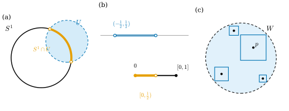
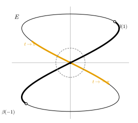

3.3 부분공간과 곱공간
이 절의 목표
- 부분공간 위상을 정의하고, “\(A\)에서 열린”과 “\(X\)에서 열린”을 구별할 수 있다.
- 부분공간과 곱공간으로 들어가는 사상의 연속성을 특징적 성질로 판정할 수 있다.
- 위상 매장을 정의하고, 연속 단사이지만 매장이 아닌 예(8자 곡선)를 설명할 수 있다.
- 곱위상을 정의하고, 토러스 \(T^2 = S^1 \times S^1\)이 \(\R^3\)의 원환면과 위상동형임을 보일 수 있다.
선수 지식
동기
3.2절에서는 \(S^1\), \(S^n \setminus \{N\}\), \([0, 2\pi)\) 같은 집합에 “\(\R^n\)의 거리를 제한한 위상”을 주었다. 이 방법은 둘러싼 공간에 거리가 있을 때만 쓸 수 있다. 그러나 앞으로는 거리 없이 주어진 위상공간의 부분집합(예: 다양체의 열린부분집합, 다양체 안의 곡선)에도 위상을 주어야 한다. 이 절의 첫 번째 도구인 부분공간 위상은 “둘러싼 공간의 열린집합을 잘라 낸 것”을 열린집합으로 삼는다. 거리공간에서는 이것이 제한한 거리의 위상과 같다(명제 3.3.4).
두 번째 도구는 곱이다. \(\R^2 = \R \times \R\)처럼 두 공간의 점을 짝지어 새 공간을 만든다. \(\R^3\)의 원환면은 원 두 개의 곱 \(S^1 \times S^1\), 즉 토러스로 볼 수 있다. 이 둘은 이 장의 두 번째 질문 “공간을 이어 붙여 새 공간을 만들 수 있는가?”로 가는 준비이기도 하다. 이어 붙이기(몫공간)는 3.4절에서 다룬다.

부분공간 위상
정의 3.3.1 (부분공간 위상, subspace topology). \((X, \mathcal{T})\)가 위상공간이고 \(A \subseteq X\)라 하자.
는 \(A\) 위의 위상이다. 이것을 \(A\)의 부분공간 위상(subspace topology)이라 하고, 이 위상을 준 \(A\)를 \(X\)의 (위상) 부분공간이라 한다. \(\mathcal{T}_A\)의 원소를 “\(A\)에서 열린” 집합이라 부른다.
\(\mathcal{T}_A\)가 위상인지 확인하자. \(\varnothing = \varnothing \cap A\)이고 \(A = X \cap A\)이다. \(\bigcup_\alpha (U_\alpha \cap A) = \big(\bigcup_\alpha U_\alpha\big) \cap A\)이고 \((U \cap A) \cap (V \cap A) = (U \cap V) \cap A\)이므로 합집합과 두 원소의 교집합이 다시 \(\mathcal{T}_A\)에 속한다. “부분공간”은 정의 1.1.5의 벡터 부분공간과 같은 낱말이지만 다른 개념이다. 이 장에서 부분공간은 늘 위상 부분공간이다. 앞으로 \(\R^n\)의 부분집합(구면, 곡면, 구간 등)에는 따로 말하지 않는 한 부분공간 위상을 준다.
예 3.3.2. (a) \(S^1 \subseteq \R^2\)에서 위쪽 반원 \(\{x \in S^1 : x^2 \gt 0\} = S^1 \cap \{x^2 \gt 0\}\)은 \(S^1\)에서 열린집합이다. 반평면 \(\{x^2 \gt 0\}\)이 \(\R^2\)에서 열려 있기 때문이다. 그림 3.3.1(a)의 호 \(S^1 \cap U\)도 같다.
(b) \([0, 1/2) = [0, 1] \cap (-\tfrac12, \tfrac12)\)는 \([0, 1]\)에서 열려 있지만 \(\R\)에서는 열려 있지 않다(비예 3.1.8(a)와 같은 이유).
(c) \(A = [0, 1] \cup [2, 3] \subseteq \R\)에서 \([0, 1] = A \cap (-1, \tfrac32)\)은 \(A\)에서 열려 있다. 그 여집합 \([2, 3] = A \cap (\tfrac32, 4)\)도 \(A\)에서 열려 있으므로 \([0, 1]\)은 \(A\)에서 열려 있으면서 닫혀 있다.
(d) \(\Z \subseteq \R\)의 부분공간 위상은 이산위상이다. 각 \(k \in \Z\)에서 \(\{k\} = \Z \cap (k - \tfrac12,\ k + \tfrac12)\)가 열려 있고, 모든 부분집합은 한 점 집합들의 합집합이기 때문이다.
비예 3.3.3 (그럴듯하지만 틀린 정의). “\(X\)의 열린집합 가운데 \(A\)에 포함되는 것”들의 모임 \(\{U \in \mathcal{T} : U \subseteq A\}\)은 일반적으로 \(A\) 위의 위상이 아니다. \(A = [0, 1] \subseteq \R\)이면 이 모임에는 \(A\) 자신이 들어 있지 않다(\([0, 1]\)은 \(\R\)에서 열려 있지 않다). 위상의 조건 1(정의 3.1.11)이 깨진다. 더구나 \(S^1 \subseteq \R^2\)이면 \(S^1\)에 포함된 \(\R^2\)의 열린집합은 \(\varnothing\)뿐이다. 자르는(\(\cap A\)) 것과 골라내는(\(\subseteq A\)) 것은 다르다.
명제 3.3.4 (부분공간 위상의 성질). \(A\)가 위상공간 \(X\)의 부분공간이라 하자.
- (a) \(C \subseteq A\)가 \(A\)에서 닫혀 있을 필요충분조건은 \(X\)의 어떤 닫힌집합 \(D\)에 대하여 \(C = D \cap A\)인 것이다.
- (b) \(A\)가 \(X\)에서 열려 있으면, \(V \subseteq A\)가 \(A\)에서 열려 있을 필요충분조건은 \(V\)가 \(X\)에서 열려 있는 것이다. “열린”을 “닫힌”으로 바꾼 문장도 성립한다.
- (c) \((X, d)\)가 거리공간이면 \(A\)의 부분공간 위상은 \(d\)를 \(A\)로 제한한 거리의 거리 위상과 같다.
증명. (a) \(C\)가 \(A\)에서 닫혀 있으면 \(A \setminus C = U \cap A\)인 열린 \(U\)가 있다. \(D = X \setminus U\)로 두면 \(D\)는 닫혀 있고 \(D \cap A = A \setminus (U \cap A) = C\)이다. 거꾸로 \(C = D \cap A\)이면 \(A \setminus C = (X \setminus D) \cap A\)는 \(A\)에서 열려 있다.
(b) \(V\)가 \(A\)에서 열려 있으면 \(V = U \cap A\)이고, \(U\)와 \(A\)가 둘 다 \(X\)에서 열려 있으므로 \(V\)도 \(X\)에서 열려 있다. 거꾸로 \(V \subseteq A\)가 \(X\)에서 열려 있으면 \(V = V \cap A\)이다. 닫힌 경우는 (a)를 써서 같은 방식으로 보인다(\(A\)가 닫혀 있다고 가정).
(c) \(A\)에서의 공은 \(B^A_r(p) = \{x \in A : d(x, p) \lt r\} = B_r(p) \cap A\)이다. \(V\)가 제한한 거리에 대해 열려 있다고 하자. 각 \(p \in V\)에서 \(B^A_{r_p}(p) \subseteq V\)인 \(r_p\)를 골라 \(U = \bigcup_{p \in V} B_{r_p}(p)\)로 두면 \(U\)는 \(X\)에서 열려 있고 \(U \cap A = \bigcup_{p} B^A_{r_p}(p) = V\)이다. 따라서 \(V \in \mathcal{T}_A\)이다. 거꾸로 \(U\)가 \(X\)에서 열려 있고 \(p \in U \cap A\)이면 \(B_r(p) \subseteq U\)인 \(r\)이 있고 \(B^A_r(p) = B_r(p) \cap A \subseteq U \cap A\)이다. 따라서 \(U \cap A\)는 제한한 거리에 대해 열려 있다.
(c) 덕분에 3.2절의 모든 계산(입체사영, \([0, 2\pi) \to S^1\) 등)은 부분공간 위상에 대해서도 그대로 옳다.
부분공간의 위상은 “연속사상”과 잘 맞물린다. 다음 정리가 앞으로 부분공간을 다룰 때 가장 자주 쓰는 도구다.
정리 3.3.5 (부분공간의 특징적 성질). \(A\)가 \(X\)의 부분공간이고 \(\iota\colon A \to X\)가 포함사상 \(\iota(a) = a\)라 하자.
- (a) \(\iota\)는 연속이다.
- (b) \(f\colon X \to Y\)가 연속이면 제한 \(f|_A = f \circ \iota\colon A \to Y\)도 연속이다.
- (c) 위상공간 \(Z\)에서 \(A\)로 가는 사상 \(g\colon Z \to A\)가 연속일 필요충분조건은 \(\iota \circ g\colon Z \to X\)가 연속인 것이다.
이 정리가 말하는 것. \(A\)로 들어가는 사상은 \(A\)를 잊고 \(X\)로 가는 사상으로 보아 연속성을 판정해도 된다. 예를 들어 곡선 \(\gamma\colon I \to S^2\)가 연속인지는 \(\R^3\)으로 가는 곡선으로서 연속인지(성분별로, 명제 3.2.5) 보면 된다.
증명 아이디어: (a)는 부분공간 위상의 정의 그 자체다. (c)의 핵심은 \(A\)의 열린집합 \(U \cap A\)의 \(g\)에 의한 역상이 \(X\)의 열린집합 \(U\)의 \(\iota \circ g\)에 의한 역상과 같다는 관찰이다.
증명. (a) \(U\)가 \(X\)에서 열려 있으면 \(\iota^{-1}(U) = U \cap A\)는 정의에 의해 \(A\)에서 열려 있다. (b) 연속사상의 합성이다(명제 3.2.4). (c) (\(\Rightarrow\))는 (a)와 합성이다. (\(\Leftarrow\)) \(A\)의 열린집합은 \(U \cap A\) 꼴이고 \(g^{-1}(U \cap A) = g^{-1}(\iota^{-1}(U)) = (\iota \circ g)^{-1}(U)\)이다. \(\iota \circ g\)가 연속이므로 이것은 \(Z\)에서 열려 있다.
함수를 조각으로 나누어 정의할 때는 다음 보조정리를 쓴다. 3.7절에서 두 경로를 이어 붙일 때 필요하다.
보조정리 3.3.6 (붙이기 보조정리, gluing lemma). \(X = A \cup B\)이고 \(A, B\)가 둘 다 \(X\)에서 닫혀 있다고 하자(또는 둘 다 열려 있다고 하자). \(f\colon X \to Y\)의 제한 \(f|_A\)와 \(f|_B\)가 연속이면 \(f\)는 연속이다.
증명. 닫힌 경우를 보인다. \(C \subseteq Y\)가 닫혀 있으면 \(f^{-1}(C) = (f|_A)^{-1}(C) \cup (f|_B)^{-1}(C)\)이다. \((f|_A)^{-1}(C)\)는 \(A\)에서 닫혀 있으므로 명제 3.3.4(a)에 의해 \(D \cap A\) 꼴(\(D\)는 \(X\)의 닫힌집합)이고, \(A\)가 \(X\)에서 닫혀 있으므로 \(X\)에서 닫혀 있다. \(B\)쪽도 같다. 닫힌집합 두 개의 합집합은 닫혀 있으므로 명제 3.2.7에 의해 \(f\)는 연속이다. 열린 경우는 “닫힌”을 “열린”으로 바꾸어 명제 3.3.4(b)를 쓴다.
예 3.3.7. (a) 높이함수 \(h\colon S^2 \to \R\), \(h(x) = x^3\)은 연속이다. \(\R^3\)의 좌표함수를 \(S^2\)로 제한한 것이기 때문이다(정리 3.3.5(b)).
(b) 예 3.2.14(c)의 \(\sigma^{-1}\colon \R^n \to S^n \setminus \{N\}\)이 연속인 것은, \(\R^{n+1}\)로 가는 사상으로서 성분이 연속이기 때문이다(정리 3.3.5(c)).
(c) \(f\colon \R \to \R\)를 \(x \le 0\)이면 \(f(x) = 0\), \(x \ge 0\)이면 \(f(x) = x\)로 정의하자. 두 조각 \((-\infty, 0]\), \([0, \infty)\)는 닫혀 있고 각 조각에서 \(f\)는 다항식이며, 두 정의가 겹치는 점 \(0\)에서 값이 같다. 보조정리 3.3.6에 의해 \(f\)는 연속이다.
위상 매장
부분공간 위상이 있으면 “\(X\)가 \(Y\) 안에 위상까지 그대로 들어 있다”는 것을 정확히 말할 수 있다.
정의 3.3.8 (위상 매장, topological embedding). 단사 연속사상 \(f\colon X \to Y\)가 \(X\)에서 상 \(f(X)\)(부분공간 위상)로 가는 위상동형사상이면, \(f\)를 위상 매장(topological embedding)이라 한다.
예 3.3.9. (a) 부분공간의 포함사상 \(\iota\colon A \to X\)는 위상 매장이다. \(A\)에서 \(\iota(A) = A\)로 가는 항등사상이기 때문이다.
(b) \(U \subseteq \R^n\)이고 \(f\colon U \to \R^k\)가 연속이면 그래프 사상 \(\Gamma(x) = (x, f(x))\), \(\Gamma\colon U \to \R^{n+k}\)는 위상 매장이다. \(\Gamma\)는 성분이 연속이므로 연속이고, 단사다. 상 \(\Gamma(U)\)에서 \(U\)로 가는 역사상은 사영 \((x, y) \mapsto x\)를 \(\Gamma(U)\)로 제한한 것이므로 연속이다(정리 3.3.5(b)).
(c) \(\sigma^{-1}\colon \R^n \to \R^{n+1}\)은 상이 \(S^n \setminus \{N\}\)인 위상 매장이다. 역사상이 \(\sigma\)이고 이것이 연속이기 때문이다(예 3.2.14(c)).
비예 3.3.10. \(e\colon [0, 2\pi) \to \R^2\), \(e(t) = (\cos t, \sin t)\)는 단사 연속사상이지만 위상 매장이 아니다. 상 \(S^1\)으로 가는 사상 \([0, 2\pi) \to S^1\)이 위상동형사상이 아니기 때문이다 (비예 3.2.15).
비예 3.3.11 (8자 곡선). \(\beta\colon (-\pi, \pi) \to \R^2\), \(\beta(t) = (\sin 2t,\ \sin t)\)라 하자. 상 \(E = \beta((-\pi, \pi))\)는 8자 모양이다(그림 3.3.2). 이 곡선은 2.5절의 주의 상자에서 “모든 점에서 계수가 \(1\)인 단사 사상이지만 원점 근처의 상은 한 조각이 아니다”라는 예로 이미 나왔다. 여기서는 그 현상을 위상의 언어로 정확히 말한다.
- 단사. \(\beta(t) = \beta(s)\)라 하자. \(\sin t = \sin s\)이므로 \(s = t\)이거나, \(s = \pi - t\)이거나, \(s = -\pi - t\)이다(\(s, t \in (-\pi, \pi)\)). \(s = \pi - t\)이면 \(\sin 2s = \sin(2\pi - 2t) = -\sin 2t\)이므로 \(\sin 2t = 0\)이어야 하고, \(t \in (-\pi, \pi)\), \(s = \pi - t \in (-\pi, \pi)\)에서 이것은 \(t = \pi/2 = s\)일 때뿐이다. \(s = -\pi - t\)인 경우도 같은 계산으로 \(t = -\pi/2 = s\)이다. 따라서 \(s = t\)이다.
- 연속. 성분이 연속이다.
- 매장이 아님. \(U = (-1, 1)\)은 \((-\pi, \pi)\)에서 열려 있다. \(\beta(U)\)가 \(E\)에서 열려 있지 않음을 보이자. \(\beta(0) = (0, 0) \in \beta(U)\)이다. \(t \to \pi\)이면 \(\beta(t) \to (\sin 2\pi, \sin \pi) = (0, 0)\)이므로, 원점을 중심으로 하는 모든 공 \(B_\varepsilon(0)\)은 \(t\)가 \(\pi\)에 가까운 점 \(\beta(t)\)를 포함한다. 그런 \(t\)는 \(U\)에 없고 \(\beta\)가 단사이므로 \(\beta(t) \notin \beta(U)\)이다. 따라서 원점의 어떤 근방 \(B_\varepsilon(0) \cap E\)도 \(\beta(U)\)에 들어가지 않는다. \(\beta\colon (-\pi, \pi) \to E\)는 열린사상이 아니므로 위상동형사상이 아니다(명제 3.2.13).
검증: verify/v-3-3-subspaces-products.py

곱위상
두 위상공간 \(X, Y\)의 곱집합 \(X \times Y = \{(x, y) : x \in X,\ y \in Y\}\)에 위상을 주자. 가장 자연스러운 열린집합은 “열린집합 곱하기 열린집합”인 상자 \(U \times V\)이다. 그러나 상자만으로는 위상이 되지 않는다(비예 3.3.14). 상자들을 기저로 삼아 위상을 생성한다(명제 3.1.24).
정의 3.3.12 (곱위상, product topology). \(X, Y\)가 위상공간이라 하자. 상자 \(U \times V\) (\(U\)는 \(X\)의 열린집합, \(V\)는 \(Y\)의 열린집합)들의 모임 \(\mathcal{B}\)가 생성하는 \(X \times Y\) 위의 위상을 곱위상(product topology)이라 하고, 곱위상을 준 \(X \times Y\)를 곱공간(product space)이라 한다. 유한개의 곱 \(X_1 \times \dots \times X_k\)도 같은 방식으로 정의한다.
\(\mathcal{B}\)가 명제 3.1.24의 두 조건을 만족하는지 확인해야 한다. (i) \(X \times Y\) 자신이 상자다. (ii) \((U_1 \times V_1) \cap (U_2 \times V_2) = (U_1 \cap U_2) \times (V_1 \cap V_2)\)이고 이것도 상자다. 따라서 곱위상이 잘 정의된다. 명제 3.1.24와 명제 3.1.21에 의해, \(W \subseteq X \times Y\)가 열려 있을 필요충분조건은 모든 \((x, y) \in W\)에 대하여 \((x, y) \in U \times V \subseteq W\)인 상자가 있는 것이다(그림 3.3.1(c)).
예 3.3.13 (\(\R^m \times \R^n = \R^{m+n}\)). \(\R^m \times \R^n\)을 \(\R^{m+n}\)과 같은 집합으로 본다: \((x, y) = (x^1, \dots, x^m, y^1, \dots, y^n)\). 곱위상이 \(\R^{m+n}\)의 표준 위상과 같음을 보이자. 핵심은 정육면체 공이 상자라는 것이다. \(d_\infty\)((3.1.1))에 대하여
이다. \((x, y)\)와 \((x', y')\)의 \(d_\infty\) 거리는 \(\max(d_\infty(x, x'),\ d_\infty(y, y'))\)이고, 이것이 \(r\)보다 작다는 것은 두 거리가 모두 \(r\)보다 작다는 것이기 때문이다.
- \(W\)가 표준 위상에서 열려 있으면 (예 3.1.26에 의해 \(d_\infty\)에 대해서도 열려 있으므로) 각 점 \((x, y) \in W\)에서 \(B^\infty_r((x, y)) \subseteq W\)인 \(r\)이 있다. (3.3.2)에 의해 이것은 \((x, y)\)를 포함하는 상자이므로 \(W\)는 곱위상에서 열려 있다.
- 거꾸로 \(W\)가 곱위상에서 열려 있으면 각 \((x, y) \in W\)에서 \((x, y) \in U \times V \subseteq W\)인 상자가 있다. \(U, V\)가 열려 있으므로 \(B^\infty_r(x) \subseteq U\), \(B^\infty_r(y) \subseteq V\)인 \(r\)이 있고 (두 반지름 가운데 작은 쪽), (3.3.2)에 의해 \(B^\infty_r((x, y)) \subseteq U \times V \subseteq W\)이다. 따라서 \(W\)는 표준 위상에서 열려 있다.
특히 \(\R \times \dots \times \R\) (\(n\)개)의 곱위상은 \(\R^n\)의 표준 위상이다.
비예 3.3.14. 상자들의 모임 \(\mathcal{B}\) 자체는 위상이 아니다. 합집합에 닫혀 있지 않기 때문이다. \(\R^2\)에서 \(W = \big((0, 1) \times (0, 1)\big) \cup \big((2, 3) \times (0, 2)\big)\)는 두 상자의 합집합이지만 상자가 아니다. \(W = U \times V\)라면 \((0.5, 0.5) \in W\)에서 \(0.5 \in U\)이고 \((2.5, 1.5) \in W\)에서 \(1.5 \in V\)이므로 \((0.5, 1.5) \in U \times V = W\)여야 하는데, 이 점은 \(W\)에 없다. 열린 원판도 상자가 아니다. 그래서 상자들을 기저로 써서 위상을 생성한다.
정리 3.3.15 (곱공간의 특징적 성질). \(X \times Y\)가 곱공간이고 \(\pi_X(x, y) = x\), \(\pi_Y(x, y) = y\)가 사영이라 하자.
- (a) \(\pi_X\)와 \(\pi_Y\)는 연속이고 열린사상이다.
- (b) 위상공간 \(Z\)에서 가는 사상 \(f = (f_1, f_2)\colon Z \to X \times Y\)가 연속일 필요충분조건은 성분 \(f_1 = \pi_X \circ f\)와 \(f_2 = \pi_Y \circ f\)가 둘 다 연속인 것이다.
이 정리가 말하는 것. 곱공간으로 들어가는 사상은 성분별로 판정한다. 명제 3.2.5(\(\R^m\)으로 가는 사상)는 \(\R^m = \R \times \dots \times \R\)인 특수한 경우다.
증명 아이디어: 곱위상의 열린집합은 상자들의 합집합이므로 상자만 보면 된다. \(\pi_X^{-1}(U) = U \times Y\)는 상자이고, 상자의 \(f\)에 의한 역상은 두 성분의 역상의 교집합이다.
증명. (a) \(U \subseteq X\)가 열려 있으면 \(\pi_X^{-1}(U) = U \times Y\)는 상자이므로 열려 있다. 열린사상인 것은, 열린집합 \(W = \bigcup_\alpha (U_\alpha \times V_\alpha)\)의 상이 \(\pi_X(W) = \bigcup_\alpha \pi_X(U_\alpha \times V_\alpha)\)이고, \(V_\alpha \ne \varnothing\)이면 \(\pi_X(U_\alpha \times V_\alpha) = U_\alpha\), \(V_\alpha = \varnothing\)이면 \(\varnothing\)이기 때문이다. 어느 쪽이든 열린집합들의 합집합이다. \(\pi_Y\)도 같다.
(b) (\(\Rightarrow\)) 연속사상의 합성이다. (\(\Leftarrow\)) 상자의 역상은 \(f^{-1}(U \times V) = f_1^{-1}(U) \cap f_2^{-1}(V)\)이므로 열려 있다. 곱위상의 열린집합은 상자들의 합집합이고 역상은 합집합과 바꿀 수 있으므로, 모든 열린집합의 역상이 열려 있다.
명제 3.3.16 (부분공간의 곱은 곱의 부분공간). \(A \subseteq X\), \(B \subseteq Y\)가 부분공간일 때, \(A \times B\) 위의 두 위상, 즉 (i) 부분공간 \(A\)와 \(B\)의 곱위상과 (ii) 곱공간 \(X \times Y\)의 부분공간 위상은 같다.
증명. 먼저 일반적인 관찰: \(\mathcal{B}\)가 \(X \times Y\)의 위상의 기저이면 \(\{W \cap (A \times B) : W \in \mathcal{B}\}\)는 (ii)의 기저다. (ii)의 열린집합은 \((\bigcup_\alpha W_\alpha) \cap (A \times B) = \bigcup_\alpha (W_\alpha \cap (A \times B))\) 꼴이기 때문이다. 상자들의 모임을 \(\mathcal{B}\)로 쓰면, (ii)의 기저는 \((U \times V) \cap (A \times B) = (U \cap A) \times (V \cap B)\)들의 모임이다. 이것은 정확히 (i)을 정의한 상자들(부분공간 \(A\), \(B\)의 열린집합의 곱)의 모임이다. 같은 모임이 생성하는 위상이므로 (i)과 (ii)는 같다.
예 3.3.17 (토러스 \(T^2 = S^1 \times S^1\)와 원환면). \(T^2 = S^1 \times S^1\)에 곱위상을 준다. 명제 3.3.16에 의해 이것은 \(T^2\)를 \(\R^2 \times \R^2 = \R^4\)(예 3.3.13)의 부분공간으로 본 위상과 같다. 이제 \(T^2\)가 \(\R^3\)의 원환면과 위상동형임을 보이자. \(0 \lt r \lt R\)이라 하고, 기준 매개화 \(\mathbf{x}(u, v) = \big((R + r\cos u)\cos v,\ (R + r\cos u)\sin v,\ r\sin u\big)\)의 상을 \(T_{R,r} = \mathbf{x}(\R^2) \subseteq \R^3\)이라 하자. \(T^2\)의 점을 \((a, b)\), \(a = (a^1, a^2)\), \(b = (b^1, b^2)\)로 쓰고
로 둔다. \(a = (\cos u, \sin u)\), \(b = (\cos v, \sin v)\)이면 \(\Phi(a, b) = \mathbf{x}(u, v)\)이다. \(S^1\)의 모든 점은 \((\cos u, \sin u)\) 꼴이므로 \(\Phi\)의 값은 \(T_{R,r}\)에 있고, \(\Phi\)는 전사다. \(\Phi\)는 \(\R^4\)의 다항식 사상을 \(T^2\)로 제한한 것이고 값이 \(T_{R,r}\)에 있으므로 연속이다(정리 3.3.5(b), (c)). 역사상 후보는
이다. \(p = \mathbf{x}(u, v)\)이면 \(\rho = (R + r\cos u)\sqrt{\cos^2 v + \sin^2 v} = R + r\cos u\)이다. 여기서 \(R + r\cos u \ge R - r \gt 0\)이므로 제곱근을 벗길 때 부호가 바뀌지 않는다. 따라서 \((\rho - R)/r = \cos u\), \(p^3/r = \sin u\), \(p^1/\rho = \cos v\), \(p^2/\rho = \sin v\)이고, \(\Psi(\mathbf{x}(u, v)) = ((\cos u, \sin u), (\cos v, \sin v))\)이다. 즉 \(\Psi \circ \Phi = \id_{T^2}\)이고 \(\Phi \circ \Psi = \id_S\)이다(\(T_{R,r}\)의 모든 점이 \(\mathbf{x}(u, v)\) 꼴이므로). \(\Psi\)의 성분은 \(\rho \ge R - r \gt 0\)인 곳에서의 연속함수이고 값이 \(T^2\)에 있으므로 \(\Psi\)는 연속이다(정리 3.3.5(b), (c)). 따라서 \(\Phi\)는 위상동형사상이고 \(T^2 \cong T_{R,r}\)이다.
검증: verify/v-3-3-subspaces-products.py
요약
- 부분공간 위상은 둘러싼 공간의 열린집합을 잘라 낸 \(U \cap A\)들이다. 거리공간에서는 제한한 거리의 위상과 같다(명제 3.3.4).
- 부분공간 \(A\)로 들어가는 사상은 \(X\)로 가는 사상으로서 연속이면 연속이다(정리 3.3.5). 닫힌 두 조각에서 연속인 함수는 연속이다(붙이기 보조정리).
- 위상 매장은 상 위로의 위상동형사상인 단사 연속사상이다. 8자 곡선은 단사 연속이지만 매장이 아니다(비예 3.3.11).
- 곱위상은 상자 \(U \times V\)들이 생성하는 위상이다. 곱으로 들어가는 사상은 성분별로 판정하고, \(\R^m \times \R^n = \R^{m+n}\)이다.
- 토러스 \(T^2 = S^1 \times S^1\)은 \(\R^3\)의 원환면과 위상동형이다(예 3.3.17).
다음 절에서는 이미 있는 공간의 점들을 “같은 점으로 보아” 이어 붙이는 방법, 몫공간을 다룬다. 정사각형의 마주 보는 변을 붙여 토러스를 다시 만들고, \(\R^{n+1} \setminus \{0\}\)의 원점을 지나는 직선마다 한 점을 대응시켜 실사영공간 \(\RP^n\)을 만든다.
연습문제
연습 3.3.1 ★ \(A = [0, 1] \cup (2, 3] \subseteq \R\)에서 다음 집합이 \(A\)에서 열려 있는지, 닫혀 있는지 판별하여라. (a) \([0, 1]\) (b) \((2, 3]\) (c) \(\{0\}\) (d) \((2, 3)\)
풀이
(a) 열려 있고 닫혀 있다. \([0, 1] = A \cap (-1, 2)\)이고 \([0, 1] = A \cap [0, 1]\)(\([0,1]\)은 \(\R\)에서 닫혀 있음)이다(명제 3.3.4(a)).
(b) 열려 있고 닫혀 있다. \((2, 3] = A \cap (2, 4)\)이고, 그 \(A\)에서의 여집합 \([0, 1]\)이 (a)에서 열려 있다.
(c) 닫혀 있고 열려 있지 않다. \(\{0\}\)은 \(\R\)에서 닫혀 있으므로 \(A \cap \{0\}\)으로서 닫혀 있다. \(A\)에서 \(0\)을 중심으로 하는 공 \(B^A_r(0) = (-r, r) \cap A\)는 \(0\) 아닌 점 \(\min(r, 1)/2\)를 포함하므로 \(\{0\}\)은 열려 있지 않다.
(d) 열려 있고 닫혀 있지 않다. \((2, 3) = A \cap (2, 3)\)이다. 닫혀 있다면 \(A\)에서의 여집합 \([0, 1] \cup \{3\}\)이 열려 있어야 하는데, \(3\)을 중심으로 하는 \(A\)의 공은 \(3 - \min(r,1)/2 \in (2, 3)\)을 포함한다.
연습 3.3.2 ★ 위쪽 반구 \(S^2_+ = \{x \in S^2 : x^3 \gt 0\}\)이 \(S^2\)에서 열려 있음을 보이고, \(P(x^1, x^2, x^3) = (x^1, x^2)\)를 제한한 \(P\colon S^2_+ \to B_1(0) \subseteq \R^2\)가 위상동형사상임을 보여라.
힌트
역사상 후보는 \(u \mapsto (u^1, u^2, \sqrt{1 - \abs{u}^2})\)이다. 이것은 그래프 사상이다(예 3.3.9(b)).
풀이
\(S^2_+ = S^2 \cap \{x^3 \gt 0\}\)이고 반공간 \(\{x^3 \gt 0\}\)은 \(\R^3\)에서 열려 있다. \(x \in S^2_+\)이면 \(\abs{P(x)}^2 = 1 - (x^3)^2 \lt 1\)이므로 \(P(x) \in B_1(0)\)이다. \(f(u) = \sqrt{1 - \abs{u}^2}\)는 \(B_1(0)\)에서 연속이고 양수이므로, \(\Gamma(u) = (u, f(u))\)는 \(S^2_+\)로 가는 연속사상이다(\(\abs{\Gamma(u)}^2 = \abs{u}^2 + 1 - \abs{u}^2 = 1\)). \(P(\Gamma(u)) = u\)이고, \(x \in S^2_+\)이면 \(x^3 = \sqrt{1 - (x^1)^2 - (x^2)^2}\)(\(x^3 \gt 0\))이므로 \(\Gamma(P(x)) = x\)이다. \(P\)는 연속함수의 제한이므로 연속이고, 따라서 위상동형사상이다.
(이 사상은 6장에서 구면을 그래프로 나타내는 매개화(예 6.1.5)로, 11장에서 \(S^n\)의 그래프 차트로 다시 나온다.)
연습 3.3.3 ★ 참인지 거짓인지 판별하고 이유를 대어라. (a) \(A\)가 \(X\)에서 열려 있고 \(U\)가 \(A\)에서 열려 있으면 \(U\)는 \(X\)에서 열려 있다. (b) \(U\)가 \(A\)에서 열려 있으면 \(U\)는 \(X\)에서 열려 있다. (c) \(\Q \subseteq \R\)의 부분공간 위상은 이산위상이다. (d) \(\{1/k : k \ge 1\} \subseteq \R\)의 부분공간 위상은 이산위상이다.
풀이
(a) 참. 명제 3.3.4(b). (b) 거짓. \([0, 1/2)\)은 \([0, 1]\)에서 열려 있지만 \(\R\)에서는 아니다(예 3.3.2(b)). (c) 거짓. \(\{0\}\)이 \(\Q\)에서 열려 있다면 \(\{0\} = U \cap \Q\)인 열린 \(U \ni 0\)이 있어야 하는데, \(U\)는 어떤 구간 \((-r, r)\)을 포함하고 그 구간에는 \(0\)이 아닌 유리수가 있다. (d) 참. \(\{1/k\} = \{1/j : j \ge 1\} \cap \big(\tfrac{1}{k+1},\ \tfrac{1}{k-1}\big)\) (\(k = 1\)이면 오른쪽 끝을 \(2\)로)이므로 모든 한 점 집합이 열려 있다.
연습 3.3.4 ★ 곱공간 \(S^1 \times \R\)이 원기둥 \(C = \{(x, y, z) \in \R^3 : x^2 + y^2 = 1\}\)과 위상동형임을 보여라.
풀이
\(\Phi\colon S^1 \times \R \to C\), \(\Phi((a^1, a^2), t) = (a^1, a^2, t)\)로 두자. 명제 3.3.16과 예 3.3.13에 의해 \(S^1 \times \R\)은 \(\R^2 \times \R = \R^3\)의 부분공간이고, \(\Phi\)는 \(\R^3\)의 항등사상을 제한한 것이다. 상은 정확히 \(C\)이므로 \(\Phi\)는 \(S^1 \times \R\)에서 \(C\)로 가는 전단사이고, 그 역도 항등사상의 제한이다. 둘 다 연속이므로 위상동형사상이다. (사실 두 공간은 \(\R^3\)의 같은 부분집합에 같은 위상을 준 것이다.)
연습 3.3.5 ★★ 대각사상 \(\Delta\colon X \to X \times X\), \(\Delta(x) = (x, x)\)가 위상 매장임을 보여라.
연습 3.3.6 ★★ 8자 곡선의 상 \(E = \beta((-\pi, \pi))\)(비예 3.3.11)가 집합 \(L = \{(x, y) \in \R^2 : x^2 = 4y^2(1 - y^2)\}\)과 같음을 보이고, \(E\)가 \(\R^2\)의 닫힌집합임을 결론지어라. (예 3.6.8(d)에서 사용)
풀이
(\(E \subseteq L\)) \(x = \sin 2t = 2\sin t\cos t\), \(y = \sin t\)이면 \(x^2 = 4\sin^2 t\cos^2 t = 4y^2(1 - y^2)\)이다.
(\(L \subseteq E\)) \((x, y) \in L\)이면 \(4y^2(1 - y^2) = x^2 \ge 0\)이므로 \(\abs{y} \le 1\)이고 \(x = \pm 2y\sqrt{1 - y^2}\)이다. \(t_0 = \arcsin y \in [-\pi/2, \pi/2]\)로 두면 \(\cos t_0 = \sqrt{1 - y^2} \ge 0\)이므로 \(\beta(t_0) = (2y\sqrt{1 - y^2},\ y)\)이다. 다른 부호는 \(y \ge 0\)이면 \(t_1 = \pi - t_0\), \(y \lt 0\)이면 \(t_1 = -\pi - t_0\)로 얻는다: \(\sin t_1 = y\), \(\cos t_1 = -\cos t_0\)이므로 \(\beta(t_1) = (-2y\sqrt{1 - y^2},\ y)\)이다. \(t_1 \in (-\pi, \pi)\)가 안 되는 경우는 \(y = 0\)(\(t_1 = \pm\pi\))뿐인데, 그때는 \(x = 0\)이고 \((0, 0) = \beta(0)\)이다.
\(L\)은 다항식 \(x^2 - 4y^2(1 - y^2)\)에 의한 \(\{0\}\)의 역상이므로 닫혀 있다(명제 3.2.7). 따라서 \(E = L\)은 닫혀 있다. (정의역 \((-\pi, \pi)\)는 닫혀 있지 않은데 상은 닫혀 있다. 끝점 \(\pm\pi\)가 가야 할 자리인 원점이 이미 \(\beta(0)\)으로 들어 있기 때문이다.)
검증: verify/v-3-3-subspaces-products.py
연습 3.3.7 ★★ \(f\colon \R \to \R\)가 연속이면 그래프 \(\Gamma(f) = \{(x, f(x)) : x \in \R\}\)가 \(\R^2\)의 닫힌집합임을 보여라.
힌트
\(\Gamma(f)\)는 연속함수 \(F(x, y) = y - f(x)\)의 영점집합이다.
풀이
\(F(x, y) = y - f(x)\)는 \(\pi_Y\)와 \(f \circ \pi_X\)의 차이다. 두 함수는 연속이고(정리 3.3.15(a), 합성), 연속함수의 차는 연속이다. \(\Gamma(f) = F^{-1}(\{0\})\)이므로 닫혀 있다.